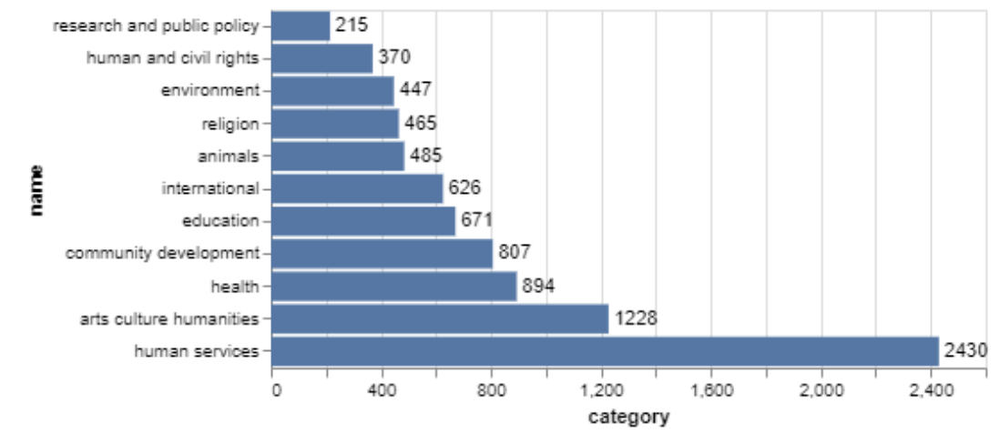
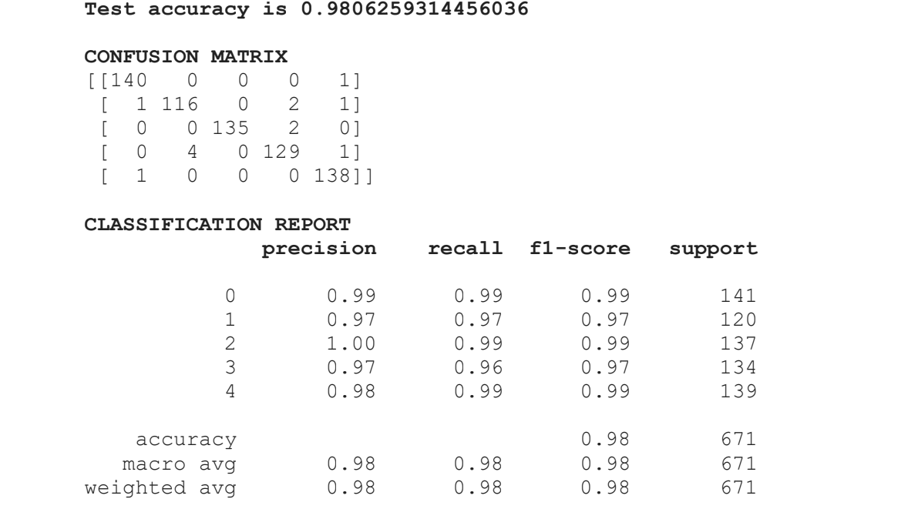

Social Responsibility is a fundamental necessity in today’s world to fight social-evils. When it comes to Charity Donations, users face a lack of motivation due to the process being difficult and tedious. There is an unavailability of a one-stop platform where users can get recommendations of multiple trusted Charities based on articles read by them online. As for NGOs, there is a need of expanding their reach and influence. The Recommendation Engine takes Web-Articles as input, pre-processes the raw text data using Natural Language Processing. For Classification, we have tested 5 different algorithms- Naïve Bayes, Logistic Regression, Support Vector Machines, Stochastic Gradient Descent and Random Forest algorithms. It then predicts the Social Cause highlighted in the article and recommends top 3 charities based on the predicted cause and various other metrics like user-ratings, financial-ratings, etc. This Recommendation Engine is integrated with a Web-Application built using Streamlit, an open-source Python framework. Streamlit builds tunnel websites that can be accessed as long as the Python Notebook runs online.
Scraping the Charity Navigator webpages which have information of recognized charities and creating a dataset(csv file) from the scraped information. Source of the dataset: https://www.charitynavigator.org/
These are the steps explaining the working of the system:
1) The input for the model will be text from online news articles.
2) We will be using APIs from trusted sources like Charity Navigator to get a list of
numerous verified charities for several social causes. We will be scraping the data from
web pages that have information regarding recognized charities such as - Charity
name, Website link, Ratings, Category/Cause supported, Donation link, and other
relevant information. Further, we will be creating a dataset(CSV file) out of the scraped
information.
3) NLP and pre-processing techniques such as (a) Visualising and analysing patterns in the data (b) Checking class balance (c) Dropping unwanted rows/ columns (d) Stemming words and filtering integers, will be applied to the contents of the dataset.
4) This processed data will be fed to a machine learning model (classifier) that will predict
the social cause that the article talks about. The classifiers will be trained on the
category/ cause.
In order to analyze the Recomendation Engine and generate insights out of it, we followed the a process that looked at the data using the following visualizations:
Visualizations
Correlations
Confusion Matrix